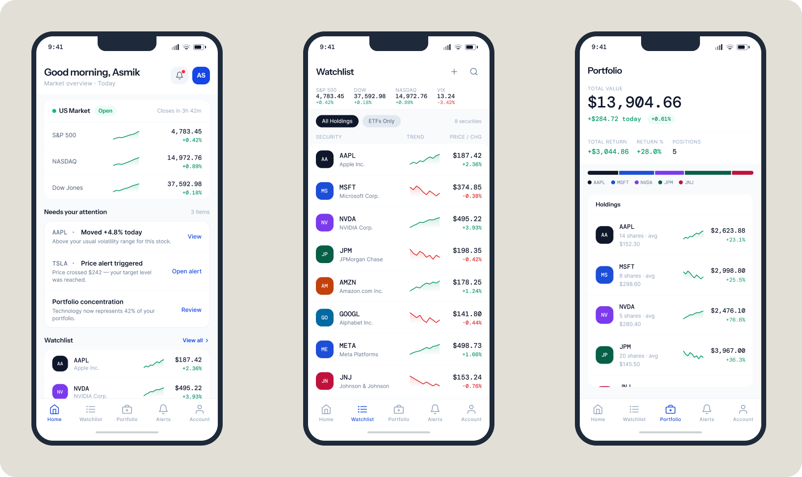
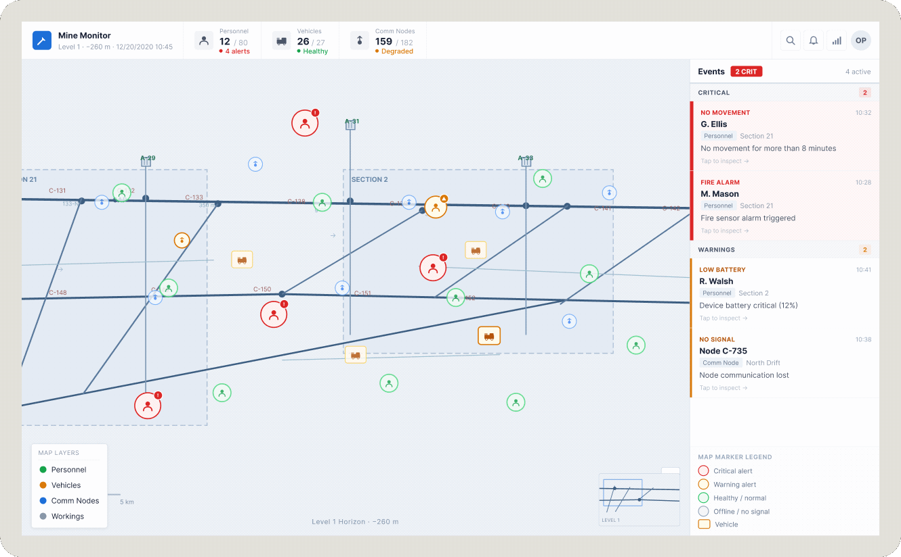
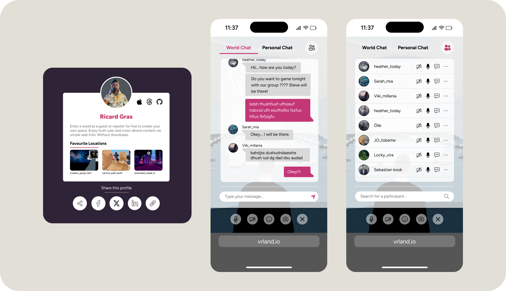

Senior Product Designer
Designing complex digital products that work under real constraints.
I help product teams identify the right features through research, audits, and concept validation — and ship design that moves metrics.
FinTech · Enterprise · Emerging Tech · Dubai, UAE

Tickeron
FinTech / Investment platform · Product Designer
AI-powered investment platform for active retail investors — stocks, crypto, and ETFs. 3 years as product designer across 6 teams.
View case →
Skillset
Journey mapping
Competitive benchmarking
Design systems
Navigation design
Information architecture
Progressive disclosure
Figma
Result
Checkout abandonment −41%, subscriptions ×2 in 90 days, onboarding drop-off −47%, design system 0→1

Alpha Smart
Industrial / Mining / Enterprise B2B · UX/UI Designer
Real-time safety monitoring for underground mining — 400+ workers, 120+ sensors, vehicles, and communication nodes across multiple levels.
View case →
Skillset
User interviews
Usability testing
Empathy mapping
Alert & notification design
Data-dense UI
Information hierarchy
Figma
Result
UI readable in under 5 seconds. Check-in/out flow under 90 seconds. Operational coverage +67%.
Industry
Industrial / Mining enterprise software

Captic / w3dge
Spatial Computing / Immersive Web · Product Design Consultant
Browser-based virtual worlds platform for multiplayer social spaces — 3D environments entered directly in the browser, no downloads.
View case →
Skillset
UX audit
Heuristic evaluation
Thematic analysis
Research synthesis
Progressive onboarding
Interaction design
Figma
Result
12+ dead ends found, 32 growth opportunities surfaced. Reports adopted as Q1 2025 product roadmap.
NDA
Screens shown with permission. Confidential details omitted.
Education
Master's in Human-Computer Interaction — Fachhochschule Salzburg, Austria · 2023–2025
Bachelor's in Information Systems — ITMO University, Russia · 2012–2016